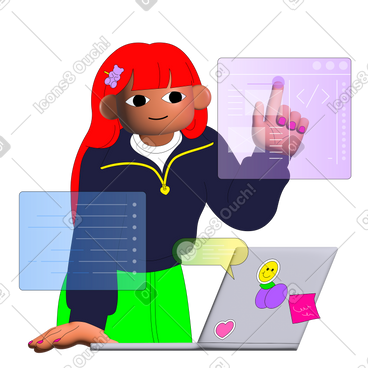

Hello, my name is Srishti Sharma.
I am a passionate web developer.

Work Experience

HTML Developer (2022-2023)
Created engaging web pages and layouts using HTML5.

Node.js Developer (2023-2024)
Developed server-side applications using Node.js and Express.js.

Frontend Developer (2023-2024)
Built interactive user interfaces using React.js.

Full Stack Developer (2024-2025)
Worked on end-to-end web development using MERN stack.

SQL Database Developer (2024-2025)
Designed and optimized database schemas, wrote advanced SQL queries, and managed database systems.
C Developer
Developed efficient algorithms and performed low-level system programming.

C++ Developer
Implemented object-oriented programming concepts for software development.
Java Developer
Built robust and scalable applications using Java and Spring Framework.

Python Developer
Worked on data analysis, machine learning models, and web development using Django.